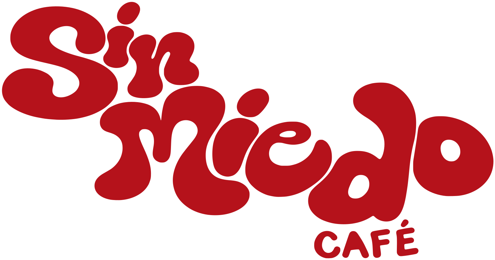
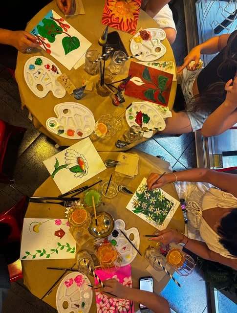
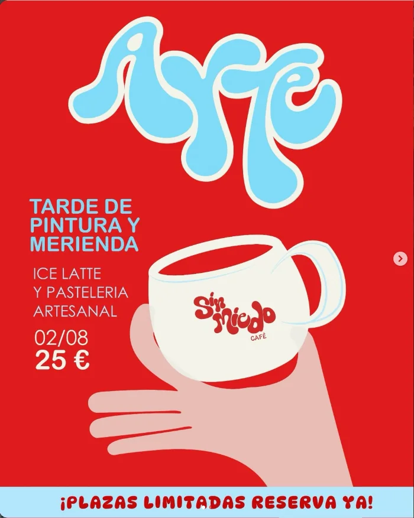
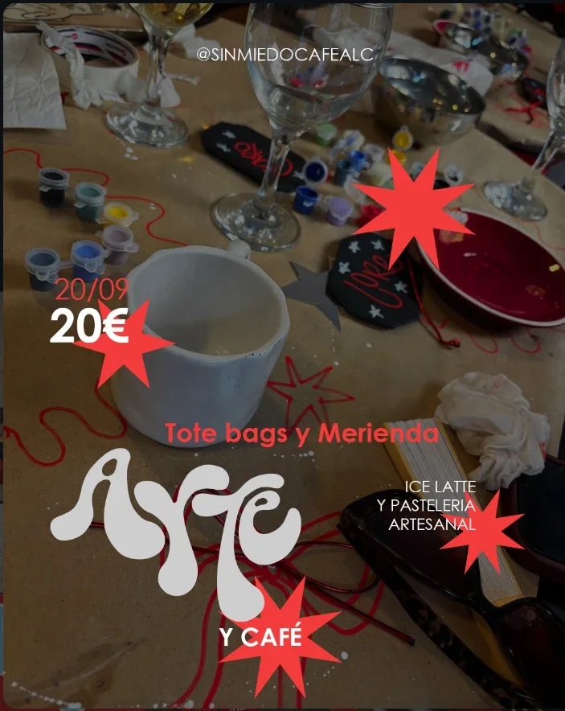
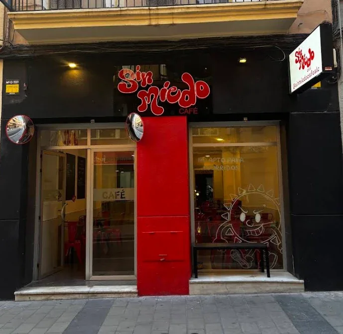
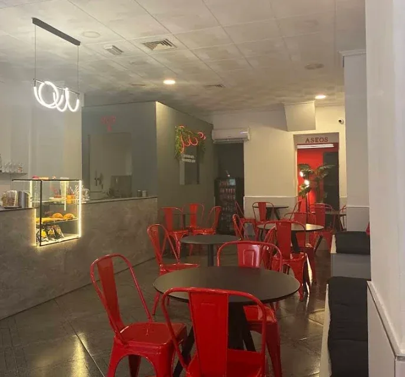
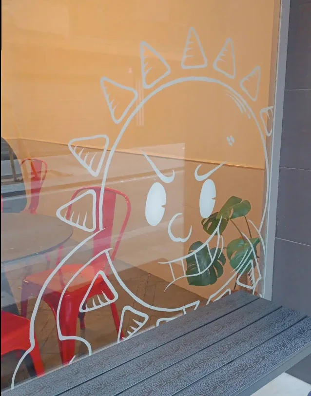
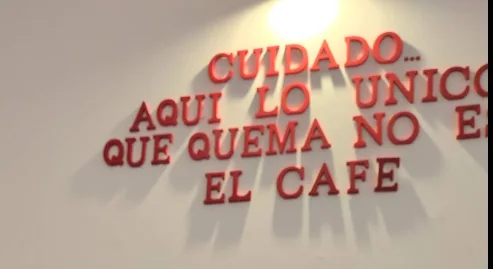
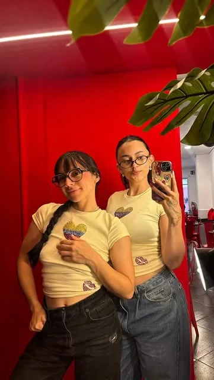
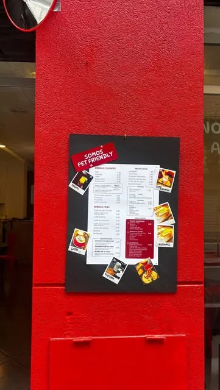

Tu pedido
Bacon Mood
+ un café colombiano
Tostada de pan artesanal con crema de aguacate, huevos revueltos y bacon. Crujiente por fuera, brutal por dentro.
Ver toda la carta
Pide a domicilio¿Pereza de salir? También estamos en Glovo.
Pedir a domicilioDinos cómo vienes y te decimos qué pedir. Como hacen Laura y Daniela en barra, pero en versión web.
Tu pedido
+ un café colombiano
Tostada de pan artesanal con crema de aguacate, huevos revueltos y bacon. Crujiente por fuera, brutal por dentro.
Ver toda la cartaDesayunos, brunch y café de especialidad en el centro de Alicante: tostadas de pan artesanal, recetas colombianas, dulces caseros y bebidas frías para todo el año.
Tostada de pan artesanal con crema de aguacate, huevos revueltos y bacon crujiente. Uno de los desayunos salados más pedidos de nuestro brunch en Alicante centro.
Desayuno típico colombiano: dos huevos revueltos o con guiso, dos chorizos colombianos, arepa de maíz y queso mozzarella. Un desayuno completo para empezar el día con energía.
Sándwich de pan artesanal tostado con jamón serrano, queso cheddar, huevos revueltos y mayonesa de trufa. Perfecto para un brunch salado y contundente.
Pan artesanal tostado relleno de ensalada de pollo con maíz, salsa casera y mezcla de lechugas. Una opción fresca para desayunar o almorzar en Alicante.
Waffle salado de yuca o de plátano maduro con dos toppings a elegir. Una receta de inspiración colombiana, distinta a los waffles de siempre.
Croissant a la plancha relleno de jamón york, queso mozzarella y piña. Un croissant salado ideal para el desayuno o la merienda.
Nuestra tostada de temporada cambia cada mes con ingredientes nuevos. Pregunta en barra cuál es la tostada de este mes.
Tortitas con dulce de leche, arándanos y plátano. El desayuno dulce perfecto para acompañar con un café o un iced latte.
Tiramisú hecho en casa, el postre que acompaña nuestras tardes de arte y merienda en Alicante.
Croissants recién horneados cada mañana, crujientes por fuera y tiernos por dentro. Solos, con café o como base de tu desayuno.
Bollería y pastelería artesanal en nuestra vitrina: dulces caseros para tu desayuno o tu merienda en el centro de Alicante.
Tostadas de pan artesanal con mermelada. Un desayuno clásico, sencillo y bien hecho.
Café de especialidad de origen colombiano: espresso, cortado, café con leche o americano. El café de la casa en pleno centro de Alicante.
Café con leche frío, con hielo y caramelo. Uno de los cafés fríos favoritos de nuestros clientes.
Té matcha preparado al momento, caliente o frío: una alternativa al café con energía suave y sabor intenso.
Limonada cremosa de coco, una bebida típica de Colombia, fresca y perfecta para el calor de Alicante.
Limonada natural con hierbabuena, refrescante y de las bebidas más recomendadas en nuestras reseñas de Google.
Batidos de fruta, una opción saludable y refrescante para el desayuno o la merienda.
Bebida de malta colombiana sin alcohol, dulce y con cuerpo. Un clásico de Colombia, también en Alicante.
Carta completa y precios en barra. ¿Te da pereza salir? Pídelo por Glovo.
Tardes de pintura, tote bags, tiramisú y el café que más te guste. Plazas limitadas, risas ilimitadas.

1.ª edición
Creatividad, risas y buena compañía, con @andre_mar.in como artista invitada. Así empezó todo.

2.ª edición · 02/08 · 25 €
Un plan para desconectar, crear y disfrutar de un buen iced latte con pastelería artesanal.

20/09 · 17:00 h · 20 €
Tu nueva tote favorita la pintas tú. Tote bag + tiramisú casero + el café que más te guste.
Próximo plan
Anunciamos cada taller en Instagram. Las plazas vuelan: reserva la tuya por mensaje directo.
Escríbenos por DMSillas rojas, neón en el techo, una vitrina que brilla y un sol en el escaparate que te mira mal. Con cariño.






5,0
★★★★★
169 opiniones en Google.
Una media de 5,0. Lo decís vosotros, no nosotros.
“Excelente ambiente, las chicas que atienden súper amables… el local muy lindo y limpio. Totalmente recomendable.”
Camila O.
“Recomiendo el sándwich de la casa y la limonada de hierbabuena. Laura y Daniela son un encanto. No hice fotos de la comida porque me la comí sin pensar en el postureo.”
Drumy W.
“Sitio perfecto para familias, es pet friendly. Sin duda volveremos para disfrutar de la comida y el mejor café colombiano.”
María del Carmen M.
“Tiene todo muy casero, bueno y natural. Las bebidas están increíbles y tienen un buen precio.”
Lorentain
“Un sitio de desayunos muy recomendable. ¡La tostada del mes está buenísima!”
A. Z.
Martes a domingo, de 8:30 a 16:00
| Lunes | Cerrado |
|---|---|
| Martes | 8:30 – 16:00 |
| Miércoles | 8:30 – 16:00 |
| Jueves | 8:30 – 16:00 |
| Viernes | 8:30 – 16:00 |
| Sábado | 8:30 – 16:00 |
| Domingo | 8:30 – 16:00 |